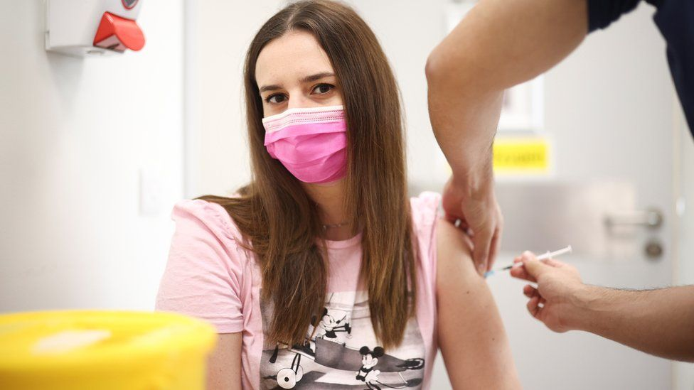
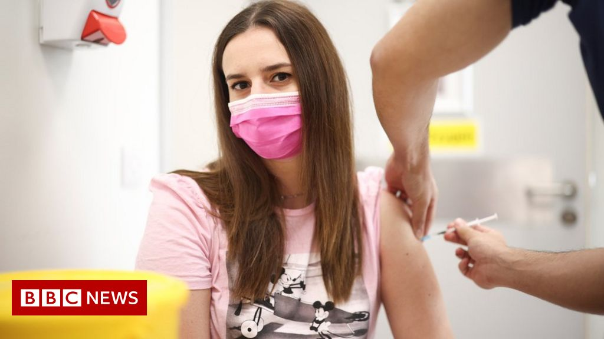

Covid: What do under-30s need to know about the vaccine?
Reuters
Over-12s with severely weakened immune systems are being offered the Covid jab.
Everyone aged 16 and over in the UK can already receive at least one dose.
All over-18s across the UK can have two Covid vaccine doses.
Sixteen and 17-year-olds are initially being offered one dose, with the intention of having a second at a later date.
The vaccine is also recommended for over-12s with complex underlying health conditions, or those who live with others at high risk.
But the UK's vaccine advisory body has decided not to recommend vaccines for healthy 12-15-year-olds on medical grounds alone.
Ministers are considering extending the rollout based on other factors such as school disruption.
More than 48m people - nearly 90% of the UK adult population - have had their first dose.Almost 44m people (80%) have now received both jabs.
Under-30s only became eligible for the vaccine in June.
So far about two-thirds of 18-29-year-olds in England have had at least one jab.In Scotland and Wales, the figure is about 75%.
In England, adults and those within three months of turning 18 can book a jab either online or by calling 119.You can also visit a drop-in clinic without an appointment.Check your local health providers and social media groups for details.
Sixteen and 17-year-olds should make appointments via their GPs, or they may be able to go directly to a local walk-in centre.
In Scotland, over-16s can register to get the vaccine on the NHS inform website or by calling 0800 030 8013.Most health boards also have drop-in vaccination clinics.
In Wales, over-16s should contact their local health board if they've not already been offered a jab.
In Northern Ireland, you can book online or call 0300 200 7813.Walk-in centres are open to older teenagers.
You can't choose - it's based on your age and which vaccines are available at the time.
But if you're under 40 or pregnant you will be offered Pfizer or Moderna.
Under-18s have so far been offered Pfizer.The medicines regulator has approved Moderna for use in 12-17-year-olds, so it may also be given.
The risk of becoming ill from Covid is about 90% lower if you've been jabbed.
People who've had the vaccine can still catch and transmit the disease.A small number may sadly die.
But according to the largest study of its kind, having two doses of the vaccine remains the best way to protect yourself against the Delta variant, now the most common strain in the UK.
After four or five months, you should have the same amount of protection whether you had AstraZeneca or Pfizer.
Neither is as effective against Delta as they are against the Alpha variant, which was dominant last winter.
Researchers don't yet have enough data to compare the Moderna jab, but believe it's 'almost certainly at least as good as the others'.
The study also shows that younger people gain more protection from being vaccinated than older people.
Covid vaccines are not compulsory, but everyone is being urged to get jabbed, to protect themselves, their family, friends and wider society.
Children under 16 don't need parental consent to get jabbed, as long as they're believed to have 'enough intelligence, competence and understanding to fully appreciate what's involved in their treatment'.This is known as 'Gillick competence'.
Without a jab, you may also not be able to do certain jobs.
For example, vaccinations will be mandatory for staff in Care Quality Commission-registered care homes in England from November, unless they are exempt.
The government has said it's also considering making both Covid and flu jabs compulsory for all frontline NHS and care workers in England.
In addition some countries only allow fully vaccinated travellers to enter.
People with both jabs don't have to self-isolate on return to the UK from amber list countries, or if they come into close contact with someone who tests positive.
GContains graphic medical scenes.
Being fully vaccinated will be a condition of entry for nightclubs and some other events in Scotland from 1 October.There are similar plans for people to have to show their Covid status at venues in England - and a decision in Wales will be made by 17 September.
Most are mild, completely normal and disappear after a few days.
They happen because the body's defences are reacting to the vaccine, and include:
A very small number of people have experienced a severe allergic reaction after the Pfizer and Moderna vaccines, so you should discuss any allergies you have before vaccination.
There have been reports that a very small number of young people developed inflammation of the heart muscle after receiving the vaccine.However, they would be much more likely to develop the condition from Covid itself.
There's no evidence to suggest you should avoid alcohol altogether, but drinking in large quantities can suppress your immune system.
Some women have experienced unusually heavy, painful or prolonged periods after being jabbed.
This may be because the jab prompts an increase in activity in the immune system, which also plays a role in the menstrual cycle.
Doctors and midwives are urging pregnant women to get a vaccine, to protect themselves and their babies.
Coronavirus can cause serious illness in some women in later pregnancy, and possibly a slightly higher rate of stillbirth.
You should discuss any questions you have with your GP or midwife.
If you're planning a pregnancy or are breastfeeding, government guidance says you can still get vaccinated,
A recent study suggests vaccination can help improve long Covid symptoms.
Researchers think the vaccine could be pressing the body's reset button and helping it recover.
The BBC is not responsible for the content of external sites.
Posted On: 2021-09-11T00:00:00
Posted By: Philippa Roxby


Content Date: 2021-09-11
Download Date: 2021-09-16
Document ID: L0C04G5C1